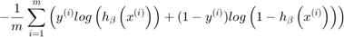
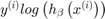
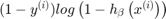
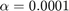
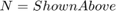
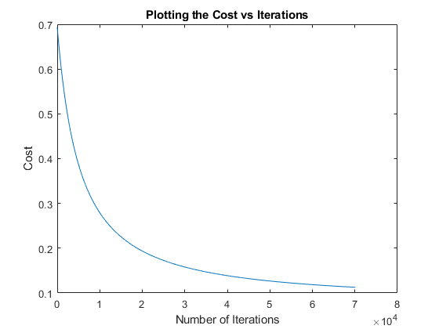

Exercise 5: Multivariate Logistic Regression
Submitted by Prasannjeet Singh
Contents
Q1. Reading the data
data = load('Data/breast-cancer.mat'); data = data.breast_cancer; data = data(randperm(size(data,1)),:); % Shuffle rows
Q2. Replacement and separation into training set and test set
% Replacing 2's and 4's with 0's and 1's respectively: data(:,10) = data(:,10) == 4; % Below value can be changed if test data are to be varied totalTestData = 100; testSet = data(1:totalTestData,:); data = data(totalTestData+1:end,:);
Reason for replacing 2 and 4 with 0 and 1:
As we know, the cost function in logistic regression is:

The above term is basically combined of two different terms. If the value of y is 0, the first term  cancells and becomes zero. Similarly, if y is 1, the second term  cancels and becomes zero. As it is a logistic regression, this helps us find different cost values for situations when y is 0 and y is 1. In other words, our hypothesis and cost functions are optimized to work when the results are either zero and one, and they won't work if the values are any other numbers, eg. 2 and 4 in this case. This is why we have to convert them into 0 and 1. Moreover, the values 2 and 4 are just categorical values and do not signify anything numerically, so changing them will not have any affect in the sample data sets.
Test and training allocation
As we know that for a model to work efficiently, the training data should be significant, and that is why I have chosen 583 amongst 683 samples to be the training data, and 100 samples as the test data.
Q3. Normalizing, Gradient Descent and Plotting the cost function
y = data(:,end);
data = data(:,1:end-1);
data = ExTwoFunctions.normalizeData(data);
[n, totalFeatures] = size(data);
data = [ones(n,1) data];
a = 0.0001; %Defining the alpha value here
[b,costArray, N] = ExTwoFunctions.logisticGradient (data,y,a);
N
N =
70095
Summarizing above:
- 
- 
Plotting the cost function:
hFig = figure(3); plot(costArray(:,1), costArray(:,2)); title('Plotting the Cost vs Iterations'); xlabel('Number of Iterations'); ylabel('Cost'); snapnow; close(hFig);
Q4. Training Error and Accuracy Percentage
trainingError = sum(((ExTwoFunctions.sigmoid((data) * b))>= 0.5) ~= y) trainingAccuracy = (n - trainingError)*100/n
trainingError =
17
trainingAccuracy =
97.0840
Q5. Test Error and Test Accuracy Percentage
testSolution = testSet(:,end); testSet(:,end) = []; testSet = [ones(totalTestData,1) ExTwoFunctions.normalizeData(testSet)]; testError = sum(((ExTwoFunctions.sigmoid((testSet) * b))>= 0.5) ~= testSolution) testAccuracy = (totalTestData - testError)*100/totalTestData
testError =
2
testAccuracy =
98
Q6. Repeated Runs
Repeating the runs has an effect on all the parameters which are:
- Number of iterations N
- Training Error
- Training Accuracy
- Test Error
- Test Accuracy
Re-running the file without changing anything does not have a significant change and more often than not, the error/accuracy are the same. However, if the number of test data are manipulated, significant changes in the number of iterations as well as error/accuracy can be observed.
Yes, the difference in training and testing is very much expected, as both the data are separate and mutually exclusive. Moreover any hypothesis is prone to a certain extent of errors, as it is impossible to categorize each data sets accurately, therefore, we can observe some differences.